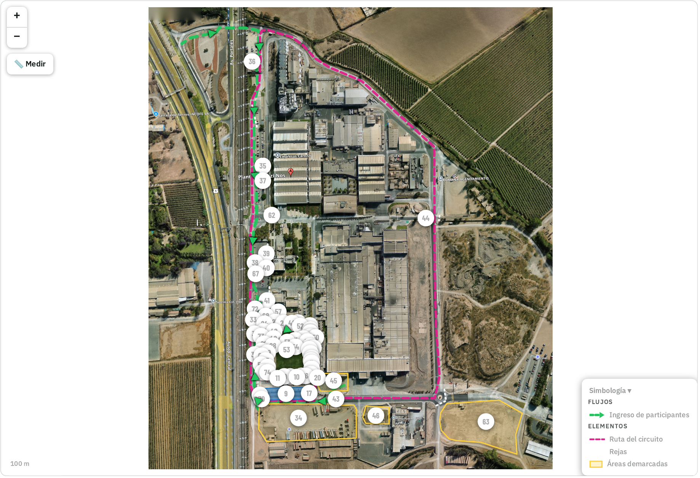
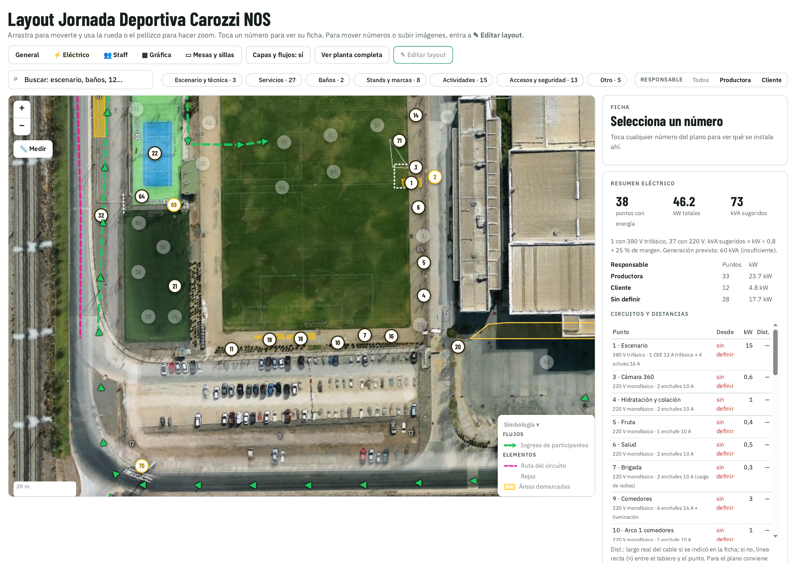

Cliente: Carozzi · Productora: Eleva Pro · Productor general: Felipe Vera (Alto Producciones). Estados: Listo Borrador Falta info · Supuesto = dato asumido, por validar.
Fuente: bases de licitación (horarios de vallas, pantalla, fruta, acreditación) y propuesta de show de almuerzo. Horas de corrida, bloques y término no están en las fuentes: marcadas como supuesto.
| Hora | Actividad | Lugar | Comité / área |
|---|---|---|---|
| 06:30 | Llegada staff Eleva Pro / Alto, apertura carpa de producción (pañol) | Carpa producción Supuesto | Producción |
| 07:00 | Entrega de radios, poleras staff y briefing por comité | Carpa producción Supuesto | Producción / Pañol |
| 07:30 | Personal de estacionamientos en posición; pruebas de acreditación (QR, Starlink) | Estacionamientos, Acreditación 1 y 2 Supuesto | Seguridad / Acreditación |
| 08:00 | Cierre de vías de tránsito vehicular internas; pantalla LED operativa | Ruta del circuito / Canchas | Seguridad / Técnica |
| 08:00 – 09:00 | Ingreso y acreditación (3.000 personas en máx. 1 hora, 20 módulos) Supuesto | Acreditación 1 y 2 · Entrega de kits | Acreditación |
| 08:30 | Inicio de la actividad · fruta e hidratación disponibles (1ª entrega) | Zona hidratación y colación | Alimentación |
| 09:00 – 10:30 | Primer bloque de actividades: calentamiento en escenario, corrida/caminata familiar, actividades deportivas Supuesto | Escenario, arco de partida, circuito, canchas | Deportes / Escenario |
| 10:30 | 2ª entrega de fruta (fin del primer bloque) | Zona hidratación y colación | Alimentación |
| 10:30 – 12:00 | Segundo bloque: clases (funcional en cancha grande; baile urbano y salsa), zona de juegos, stands Supuesto | Canchas, zona de juegos, stands | Deportes / Niños |
| 12:00 | Apertura comedores y pasta móvil · cocina de campaña (12:00–15:00) | Comedores / Pasta móvil | Alimentación |
| 12:00 – 14:30 | Show de almuerzo (PROPUESTA, pendiente aprobación): 12:00 host · 12:15 música · 12:45 concursos · 13:15 música · 13:45 magia · 14:00 sorteo | Escenario | Escenario y animación |
| 14:30 | Inicio retiro de vallas (debe terminar antes de 17:00) | Circuito y estacionamientos | Logística / Gunny |
| 15:00 | Término del evento · inicio desmontaje escenario y pantalla | Canchas Supuesto (hora término por confirmar) | Producción |
| 15:00 – 17:00 | Salida de vehículos asistentes; desmontaje general | Estacionamientos / todo el recinto | Seguridad / Logística |
Las bases indicaban sábado 17 oct (fecha original); se traslada al día anterior al evento: sáb 24 oct. Franjas horarias por proveedor son propuesta a validar con cada uno.
| Día | Hora | Tarea / servicio | Zona | Responsable | Estado |
|---|---|---|---|---|---|
| Previo | Mar 20 oct 11:00–12:30 | Reunión de seguridad (Teams) | — | Producción / Seguridad | Listo |
| Previo | Mar 20 y jue 22 oct 14:30 | Inducciones Carozzi / Pronexo para todo el personal de montaje | Online | Todos los proveedores | Listo |
| Previo | Hasta jue 22 oct | Guías de despacho de todos los proveedores y Eleva Pro (entrada y salida) | — | Producción | Borrador |
| 23 oct | 08:00 | Ingreso con guía de despacho, control Pronexo; instalación carpa de producción (pañol / centro de operaciones) Supuesto | Carpa producción | Pañol / jefe montaje | Borrador |
| 23 oct | 08:30 – 18:00 | Estructura de carpas (ATS Carpas / Manuel) y encarpado 700 m² — sujeto a decisión de clima (lunes 19) Supuesto | Canchas, servicios | ATS Carpas / Manuel | Borrador |
| 23 oct | 09:00 – 13:00 | Instalación Starlink y red para acreditación Supuesto | Acreditación 1 y 2 | Trends Group | Borrador |
| 23 oct | 09:00 – 18:00 | Inicio instalación vallas en tramos sin tránsito vehicular Supuesto | Ruta del circuito | Gunny / Francisco Pozo | Borrador |
| 23 oct | Tarde | Ubicar food truck Bresler (si va dentro de canchas, antes de encarpar) Supuesto | Canchas | Carozzi / Producción | Falta info |
| 23 oct | 14:00 – 18:00 | Tendido eléctrico y tableros (TE1) Supuesto | Tableros 68–70 | Sebastián (TE1) / eléctricos Carozzi | Borrador |
| 24 oct | 08:00 – 15:00 | Escenario 6×3 m y pantalla LED 6×5 m montados (máx. 15:00) | Canchas | Cima 2 | Borrador |
| 24 oct | 08:00 – 15:00 | Vallas instaladas (máx. 15:00), dejando abiertos sectores de tránsito vehicular | Circuito / estacionamientos | Gunny | Listo |
| 24 oct | 08:00 – 13:00 | Baños (40 + 2 accesibles) en dos sectores Supuesto | Baños 1 y 2 | Proveedor por definir | Falta info |
| 24 oct | 09:00 – 15:00 | Mobiliario, módulos de acreditación, guardarropía, hidratación, zona de juegos, stands Supuesto | Varios | Producción / proveedores | Borrador |
| 24 oct | 10:00 – 16:00 | Instalación 70 lienzos Carozzi + señalética; demarcación de estacionamientos (producto no permanente) | Interior/exterior planta | Producción | Borrador |
| 24 oct | 15:00 – 18:00 | Pruebas de audio, pantalla, energía y acreditación; entrega de estatus de prueba final a Carozzi Supuesto | Todo el recinto | Producción / Cima 2 | Borrador |
| 24 oct | Tarde | Recepción de kits ordenados por talla (participantes / staff) Supuesto | Entrega de kits | Producción | Falta info |
| 25 oct | 06:30 – 08:00 | Montaje temprano: fruta, agua, mesas de kits, radios, últimos ajustes | Varios | Producción / Pañol | Borrador |
| 25 oct | 08:00 | Cierre de vías vehiculares internas | Circuito | Gunny / Seguridad | Listo |
| 25 oct | 14:30 – 17:00 | Retiro de vallas | Circuito | Gunny | Listo |
| 25 oct | Desde 15:00 | Desmontaje escenario, pantalla, carpas y servicios; salida con guía de despacho | Todo el recinto | Todos | Falta info |
| 26 oct | Por definir | Desmontaje remanente (si aplica) y entrega del recinto | Por definir | Producción | Falta info |




PDF: Layout_Jornada_Nos.pdf · Plano_Electrico_Nos.pdf · Tabla de puntos eléctricos · Carpeta Drive 03
Un canal por comité (área). Cada área tiene un comité Carozzi y un responsable Eleva Pro. Las bases piden radios para 12 líderes de actividad + 12 para personal Carozzi (mín. 24). Propuesta: 30 equipos (incluye reserva).
Nombres solo cuando aparecen en las fuentes; el resto “Por definir”. N° de radios = propuesta.
| Área | Canal | Comité Carozzi (responsable) | Responsable Eleva Pro | N° radios | Notas |
|---|---|---|---|---|---|
| Mando y coordinación general | CH 1 | Paula Muñoz H. (Carozzi) · Miguel Campos / Isabel Flores (mandantes, por confirmar) | Felipe Vera (productor general) · coordinación Eleva Pro por definir | 4 | Canal de escalamiento: solo jefes de comité y decisiones. |
| Producción, logística y montaje / pañol | CH 2 | Por definir | Jefe general de montaje: Por definir · Pañolero: Por definir | 4 | Carpa de producción = centro de operaciones. 4 asistentes de montaje por zona. |
| Seguridad, accesos y tránsito | CH 3 | Vigilancia Carozzi: Por definir | Por definir | 5 | Estacionamientos (+2.000 autos), vallas, cierre 08:00, pórticos y paleteo. |
| Acreditación y entrega de kits | CH 4 | Por definir | Por definir | 3 | 20 módulos, Welcu (asistentes y personal Carozzi), Starlink. |
| Deportes | CH 5 | Comité Deportes: Por definir (Adán solicitó cambios de actividades; rol por confirmar) | Por definir | 3 | Corrida/caminata, arcos partida y meta, clases, desafíos. |
| Escenario, animación y técnica | CH 6 | Por definir | Cima 2 (Walter Helfmann) · animador: Por definir | 2 | Show de almuerzo, pantalla, audio. |
| Alimentación y comedores | CH 7 | Comité de Alimentación: Por definir | Por definir | 3 | Comedores, pasta móvil, cocina de campaña, fruta, hidratación, Bresler. |
| Niños y zona de juegos | CH 8 | Por definir | Por definir | 2 | Juegos inflables, mesas, taca-tacas. Protocolo niño perdido. |
| Salud | CH 9 | Comité Salud: Por definir | Ambulancia / paramédicos: Por definir | 2 | Área protegida, puesto de salud. |
| Emergencias, brigada y prevención | CH 10 | Prevención de Riesgos Carozzi / Brigada: Por definir | Prevencionista: Por definir | 2 | Plan de emergencia y evacuación. Ante emergencia real, salta a CH 1. |
| Reserva / técnico | CH 16 | — | Pañol | — | Canal libre para pruebas o desborde. |
| Total | 30 | + cargadores en pañol (punto 7 Brigada tiene carga de radios). |
| Proveedor | Servicio | Contacto | Estado nóminas / notas |
|---|---|---|---|
| Trends Group SpA | Conexión a internet (Starlink) | Daniel Olivares – daniel.olivares@trendsgroup.cl – +56 9 6459 7788 | Nómina enviada a Pronexo (13 oct) |
| Gunny SpA | Cierres perimetrales (vallas) | Francisco Pozo Hernández – gunny147@gmail.com – +56 9 8736 3001 | Nómina pendiente |
| ATS Carpas | Carpas | contacto@atscarpas.cl – nombre y teléfono pendientes | Nómina pendiente |
| Cima 2 SpA | Técnica (audio, pantalla, escenario) | Walter Helfmann – whelfmann@cima2.cl – teléfono pendiente | Nómina pendiente |
| Manuel (carpa) | Carpa / encarpado | Email y teléfono pendientes | Proveedor por cerrar |
| Rentaclima | Por confirmar | Pendiente | Por confirmar |
| Sebastián | Electricista TE1 | Pendiente | Consumos del layout al 16 oct |
Contactos Carozzi: Paula Muñoz Hinojosa (corridacarozzi@carozzi.cl) · Miguel Campos e Isabel Flores (Sostenibilidad y Relacionamiento) · Romina Valenzuela (Gestión de Proveedores / Pronexo). Eleva Pro: Camila Sepúlveda, Marcela Soto, Cinthya Espinoza.